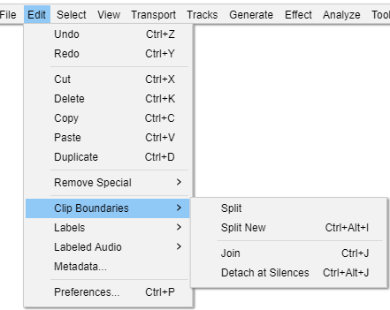
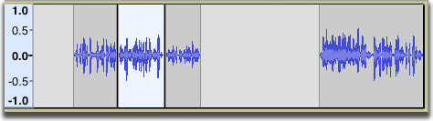
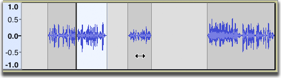
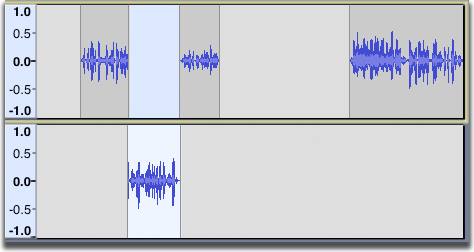
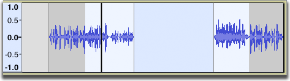
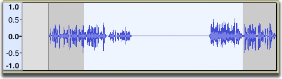
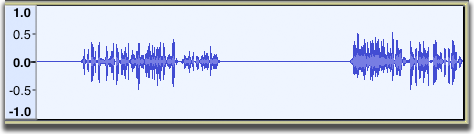
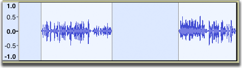

Edit Menu: Clip Boundaries
- 
Split Ctrl + I
Splits the current clip into up to three clips at the selection boundaries. The audio before, within, and after the selection can now all be shifted independently
- 
- 
Split New Ctrl+ Alt + I Extra
Does a Split Cut on the current selection in the current track, then creates a new track and pastes the selection into the new track.
- 
Join Ctrl + J Extra
If you select an area that overlaps one or more clips, they are all joined into one large clip. Regions in-between clips become silence.
- 
- 
Detach at Silences Ctrl + Alt + J Extra
In a selection region that includes absolute silence and other audio, creates individual non-silent clips between the regions of silence. The silence in the selection becomes blank space between the clips.
- 
- 
If the selection is entirely silence, it becomes blank space between the audio either side of the selection.